M2 Money Supply: The Accessory Leading Indicator
How money-supply growth and the Fed's intentions confirm your other leading indicators
M2 money-supply growth is an accessory leading indicator to inflation and liquidity — read it as a gauge of Fed intent, and use a distribution analysis to tell normal growth from abnormal.
The gist
- M1 = cash + checking deposits only; M2 = M1 plus "near money" (savings deposits, money-market securities, mutual funds, other time deposits). M2 is the broader money-supply measure.
- M2 growth is an "accessory" leading indicator to future inflation and liquidity, and a target of central-bank policy — the Fed's second conventional tool alongside interest rates.
- It's only "accessory" because the velocity of money drifts over time, so M2 growth does not correlate cleanly with GDP or returns. Read it as liquidity and Fed intent, not a clean correlate.
- Add Federal Reserve policy/outlook to the predictor list: the Fed watches the same indicators and can act preemptively (leading) or reactively (lagging), flipping your bias fast.
- Use Quill's distribution-of-returns method on monthly seasonally-adjusted M2 (FRED M2SL, back to 1959) to define normal vs abnormal growth — MoM mean ~0.569%, std ~0.457%, fat positive tail.
- An abnormal-high M2 print means the Fed is stimulating via liquidity — prompting the question "what is the Fed seeing that I'm not?" Jan-2021 YoY M2 growth hit ~25.8%, an all-time high (percent-rank 100%).
Recap: the leading indicators so far
- From the previous two videos (government/sovereign bonds and the corporate bond market) we now have leading indicators for bond-market liquidity and money flows, and for stock-market direction, possible returns, liquidity and volatility.
- Leading indicators to stock-market direction/returns/liquidity/volatility: Real Interest Rates (govt bonds); the Yield Curve (govt bonds); IG and HY/Junk spreads over the 10-Year (corporate bonds); Stock-Market Volatility — S&P 500 VIX (IPLT).
- Lagging indicators: corporate earnings outlook and economic growth (GDP).
This lesson bolts two new items onto that existing toolkit: Federal Reserve policy/outlook, and M2 money-supply growth as an accessory indicator.
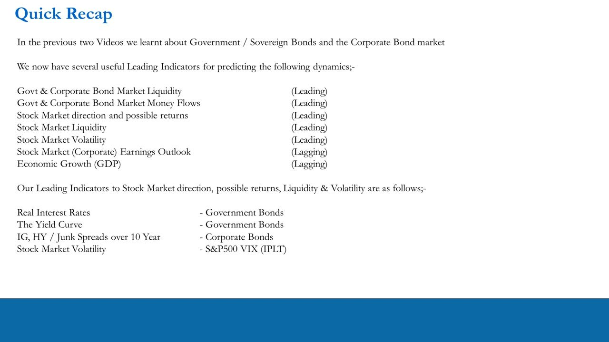
Add the Fed to the predictor list
- The Fed monitors these same leading indicators as signals of expected economic growth, and it has a self-mandated Dual Mandate for annual inflation and unemployment.
- At time of recording (2021) the Fed's official inflation target was 2%, with expected Real GDP growth of 3.3% (2022) and 2.2% (2023) — treat these as time-bound forecasts, not durable numbers.
- The Fed intervenes in money markets to manipulate the supply of funds via interest rates and money supply (Conventional) and via asset-purchase programs (non-Conventional), to manage inflation and growth.
- Federal Reserve Policy/Outlook enters the dynamics predictor list as {Leading (Pre-emptive) / Lagging (Re-active)}; Inflation is added as Lagging.
Because the Fed acts on the same indicators you watch, its response can flip your view — and therefore your portfolio bias — very quickly. A preemptive move averts stresses it sees building; a reactive move responds only later, or to an exogenous shock like COVID in 2020.
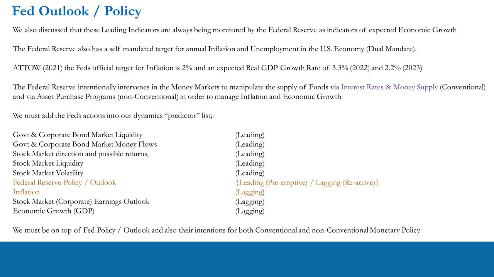
The minimum Fed-monitoring list
- At a minimum, stay on top of: the official interest rate; money-supply growth; the Fed's target inflation; the Fed's expected GDP growth.
- The FOMC meetings calendar for setting interest rates (8x per year); Fed language for expected rate moves, with minutes released 3 weeks after each policy decision / press conference (Conventional).
- Non-Conventional policy — asset-purchase programs — plus Fed language for expected changes to those programs.
- This sits alongside the existing set: Real Interest Rates, the Yield Curve, IG/HY spreads over the 10-Year, the VIX — and now M2 Money Supply (accessory) = M1 + "Near Money".
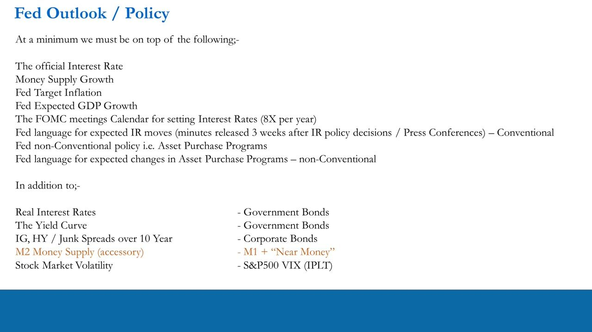
Reminder: the GDP → Earnings → S&P 500 chain
- The flow runs GDP → Earnings → S&P 500, with a feedback loop from the market back to GDP.
- The stock market leads: expected quarterly economic growth lags the S&P 500 by ~6 months (GDP and earnings are both lagging, reported quarterly).
- This is what forms the portfolio bias of Long / Short / Neutral.
M2 and the Fed are being added on top of this existing framework — they confirm or contradict the direction the leading indicators already point to.
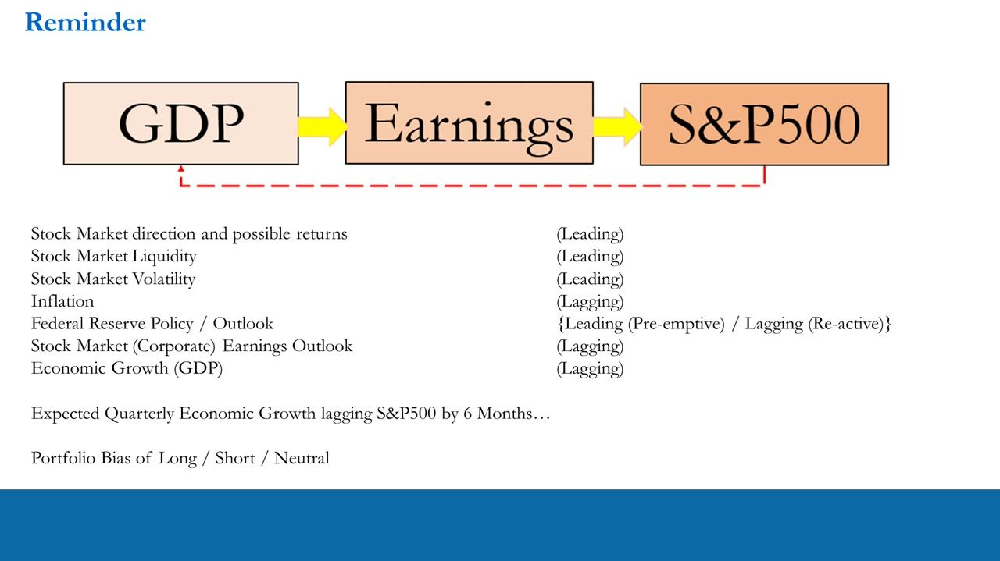
What M2 is: M1 plus "near money"
- M1 includes only cash and checking deposits.
- "Near Money" refers to savings deposits, money-market securities, mutual funds and other time deposits — anything easily convertible into cash.
- M2 = M1 + easily convertible near money, so M2 is a broader measure of the money stock and money supply than M1.
- M2 growth is an "accessory" leading indicator to future inflation and liquidity, and a target of central-bank monetary policy.
It is money-supply GROWTH that matters, not the level. M2 is the Fed's second conventional tool alongside interest rates.
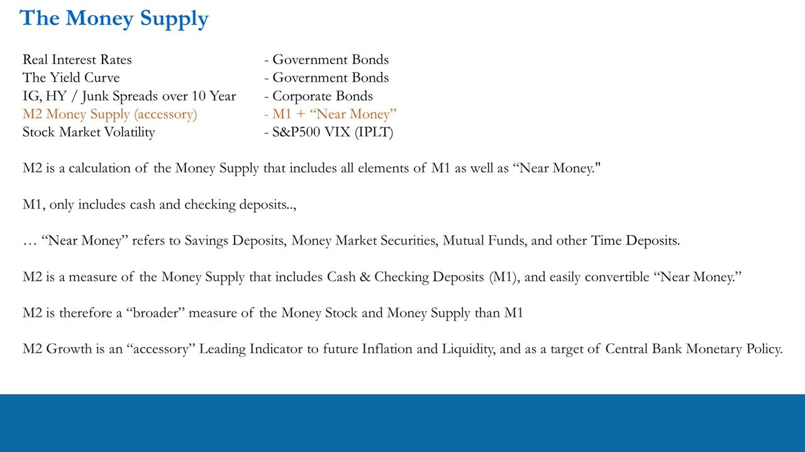
Why only "accessory": the velocity of money
- The velocity of money is how quickly money circulates around the economy and how effectively it is used.
- Because velocity (and the broader monetary mechanism) drifts in strength and predictability over time, M2 growth does not correlate cleanly or predictably with GDP growth or stock-market returns.
- So M2 is used as an accessory / confirmation indicator — read through the lens of liquidity and Fed intent — not as a clean correlate you can map onto a level of GDP or returns.
Anton overlays M2 MoM% growth against the S&P 500 (log axis) precisely to show there is no clean, tradable correlation between the two — which is why it stays "accessory."
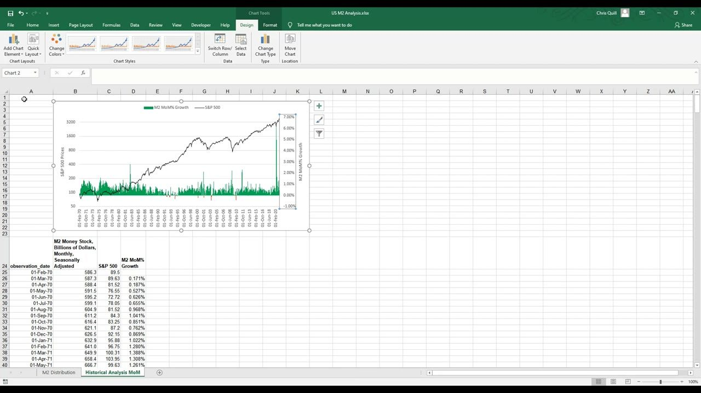
How to use it: liquidity and Fed intent
- Read M2 growth as liquidity plus Fed intent — a confirming leading indicator of Fed policy — always in conjunction with real rates, the yield curve, corporate-bond spreads and the VIX, never in isolation.
- If the environment is easing/expansionary (low rates, normal curve, healthy credit) but the Fed is REDUCING M2, that hints at tapering — potentially at odds with the bond market.
- If, in an expansion, the Fed is printing more (abnormally high M2 growth), it is stimulating via liquidity, which raises the key question: "what is the Fed seeing that I'm not?"
The whole point of measuring M2 is to spot abnormal prints — especially on the high end — that flag the Fed stepping in, then ask whether that confirms or contradicts what your other indicators are telling you.
The data source: FRED M2SL (monthly, seasonally adjusted)
- Data comes from FRED (fred.stlouisfed.org), the St. Louis Fed's economic-data portal — series M2SL, "M2 Money Stock, Billions of Dollars, Monthly, Seasonally Adjusted".
- Monthly seasonally-adjusted is chosen over weekly non-seasonally-adjusted for two reasons: abnormal moves are far easier to pick out once the data is seasonally adjusted; and the monthly series has a longer history — back to January 1959 — giving more data to judge what is abnormal.
- The raw FRED download's header rows are stripped so only date and M2 value remain, ready for analysis.
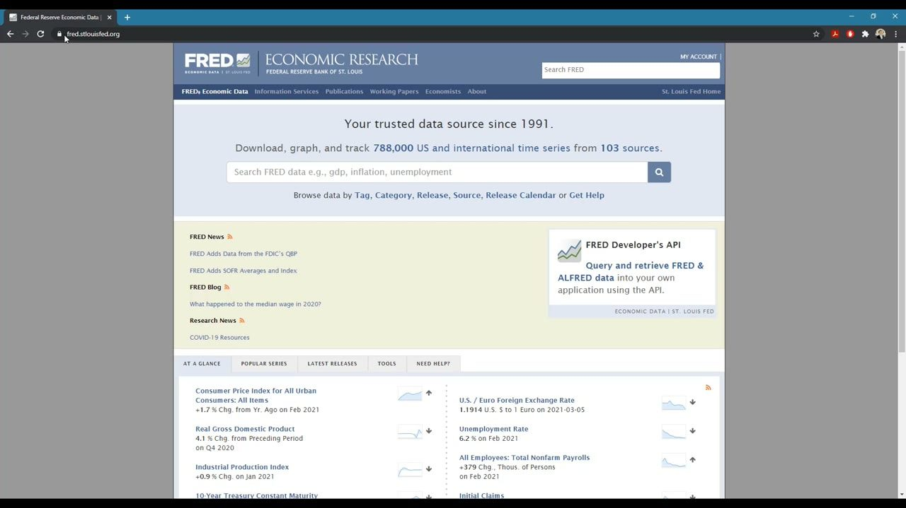
Apply the distribution-of-returns method to M2
- Compute month-on-month (and year-on-year) % change on the M2 series, then run descriptive statistics: mean, standard error, median, mode, standard deviation, variance, kurtosis, skewness, range, min/max, count.
- This is the same IPLT distribution-of-returns analysis used for stock volatility, now applied to money-supply growth to define normal vs abnormal.
- The M2 chart is restyled (gold line on a dark background) to make the near-exponential rise — and the sharp 2020 COVID spike — obvious.
The template ships with two tabs: "Nominal M2 - Monthly" and "Historical Analysis MoM".
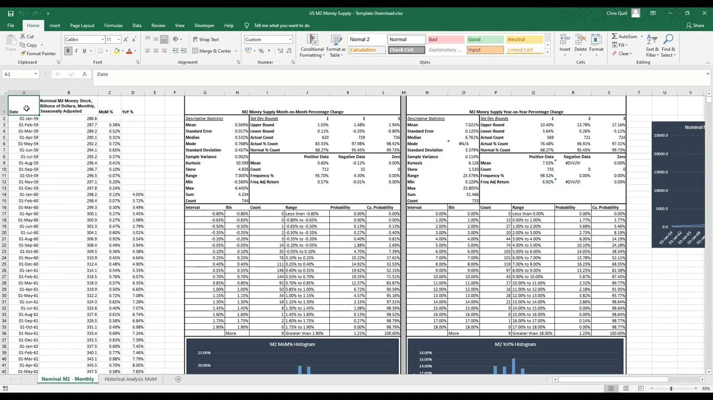
M2 growth descriptive statistics (1959–2021)
- MoM % change: Mean 0.569%, Median 0.532%, Mode 0.768%, Standard Deviation 0.457%, Range 7.005%, Min -0.560%, Max 6.445%, Count 744.
- The distribution is peaky with fat tails: Kurtosis 50.599 and Skewness 4.826 (strongly positive) — extreme moves are skewed to the positive (high-growth) side.
- YoY % change: Mean 7.021%, Median 6.761%, Standard Deviation 3.379%, Range 25.576%, Min 0.229%, Max 25.805%, Count 733; Kurtosis 6.126, Skewness 1.520.
- Positive/negative breakdown of MoM: positive months mean 0.600% (count 712, 95.7%); negative months mean -0.119% (count 32, 4.3%).
M2 almost always grows — only 32 of 744 months were negative — and when it moves abnormally it is overwhelmingly to the upside.
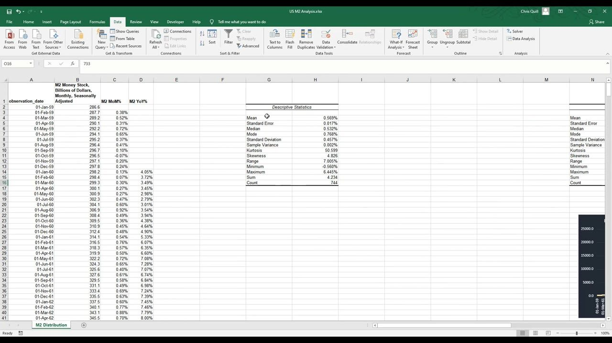
Histogram and standard-deviation bounds
- The MoM% histogram is bell-shaped but right-skewed, peaking in the 0.40%–0.55% (19.6%) and 0.55%–0.70% (19.4%) buckets with a long positive right tail.
- ±1σ / ±2σ / ±3σ bounds: Upper 1.03% / 1.48% / 1.94%; Lower 0.11% / -0.35% / -0.80%.
- Actual coverage 83.3% / 98.0% / 98.9% within ±1/2/3σ, versus the Normal-distribution expectation of 68.2% / 95.4% / 99.7% — the excess within ±1σ reflects the fat peak (high kurtosis).
The distribution is clearly non-Normal, so read abnormal prints off the actual percentile tails rather than assuming a bell curve.
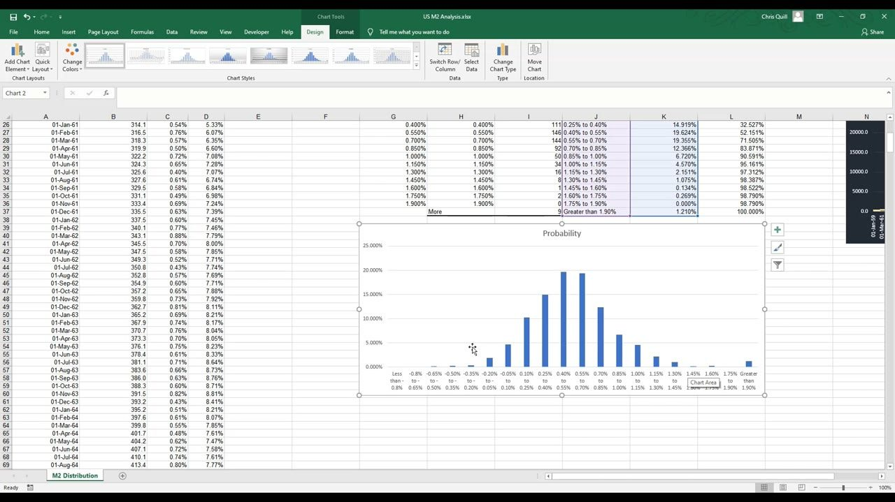
Percentile analysis: what counts as abnormal
- MoM% percentiles: 50% (median) 0.521%; 75% 0.748%; 90% 1.029%; 95% 1.202%; 99% 2.115%.
- So roughly the top 5% of monthly growth is above ~1.2% and the top 1% above ~2.1% — those are the abnormal-high prints signalling the Fed stimulating via liquidity.
- The finished template shows a live "Current Value" and "Percent Rank" cell for the latest print, so you can instantly gauge how abnormal the newest M2 reading is.
Use MoM and YoY percentile ranks together, and always alongside the other leading indicators.
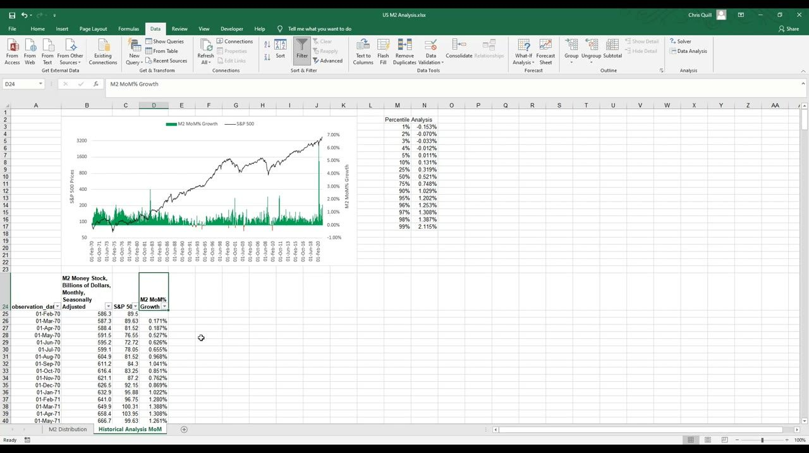
The abnormal prints line up with real events
- Filtering to the biggest MoM M2 surges pins down real liquidity events: Mar-1971 (1.39%, end of Bretton Woods / inflation), Jun-1975 (1.59%), Jan/Feb-1983 (2.81% / 1.91%, rate-ceiling removal), Sep-2001 (2.12%, 9/11), Dec-2001 (2.20%), Jul/Aug-2011 (2.06% / 2.29%, US credit downgrade).
- The 2020 COVID months dominate the largest-ever monthly expansions: Mar-20 3.51%, Apr-20 6.45% (the all-time max), May-20 4.99%, Jun-20 1.65%, and Jan-21 1.60%.
- In each case the Fed was reacting to, or pre-empting, a liquidity shock.
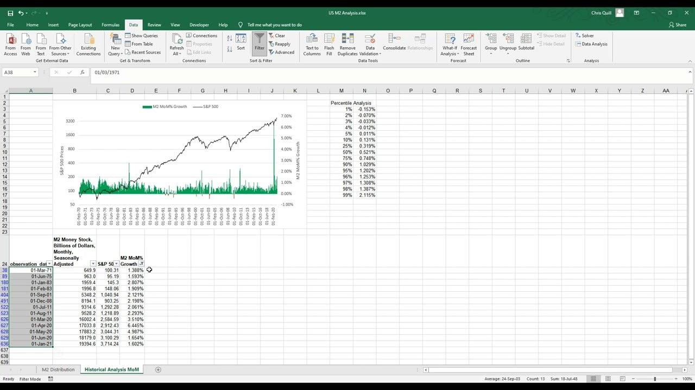
The COVID monetary surge and the completed template
- YoY M2 growth peaked at an all-time high of ~25.8% in Jan-2021 (percent-rank 100.0%) — the largest and most consistent liquidity injection in the 1959–2021 history.
- The Jan-2021 MoM print of 1.60% ranked at the 98.6th percentile; the YoY print of 25.80% at the 100th percentile.
- The finished ITPM "US M2 Money Supply" template packages it all: MoM and YoY descriptive-statistics blocks, histograms, std-dev bounds, percentile tables with live current-value/percent-rank, and a Nominal M2 line chart — refreshed by pulling the latest M2SL from FRED.
A print this extreme is exactly the accessory signal in action: the Fed is flooding the system with liquidity, and the job is to ask what that confirms or contradicts across the rest of your indicators.
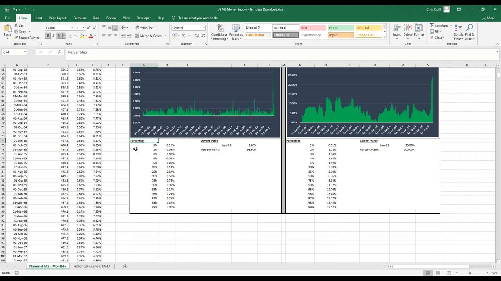
Glossary
- M1The narrowest money-supply measure: cash plus checking deposits only.
- M2A broader money-supply measure: M1 plus "near money" (savings deposits, money-market securities, mutual funds, other time deposits). FRED series M2SL.
- Near moneyAssets that are easily convertible into cash — savings deposits, money-market securities, mutual funds and other time deposits — added to M1 to form M2.
- Accessory leading indicatorA confirmation indicator used to corroborate or contradict the primary leading indicators (real rates, yield curve, spreads, VIX), not to trade in isolation.
- Velocity of moneyHow quickly money circulates through the economy and how effectively it is used; its drift over time is why M2 growth doesn't correlate cleanly with GDP or returns.
- Conventional monetary policyThe Fed's two standard tools: interest rates and the money supply.
- Non-conventional monetary policyAsset-purchase programs (QE) plus forward guidance on their size and speed.
- Dual MandateThe Fed's self-mandated targets for US annual inflation (~2% at 2021 recording) and maximum employment.
- FOMCThe Fed committee that sets interest rates; it meets 8 times a year, with minutes released ~3 weeks after each decision.
- M2SLThe FRED series code for M2 Money Stock in billions of dollars, monthly, seasonally adjusted, available back to January 1959.